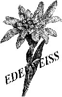
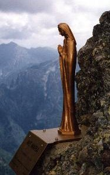

La Storia
Il Club Alpino Italiano ha una lunga storia nel nostro paese. Nel dopoguerra,
esattamente nel 1946, viene ufficialmente costituita la sottosezione di Sovico,
facente parte della Sezione di Monza. E' una stagione splendida per l'alpinismo
specialmente lombardo con i "RAGNI" di Lecco e la "PELL e OSS" di Monza. Alcuni
di loro e specialmente Andrea Oggioni frequentano assiduamente Sovico e la sede
del CAI all'Albergo "Torre". La sottosezione viene poi sciolta nel 1964 e gli
iscritti confluiscono nelle varie Sezioni vicine.
Ma alcuni anni dopo, nel
1979, un gruppo di appassionati ed ex soci della vecchia sottosezione, fonda
il "Gruppo Escursionistico Edelweiss" per diffondere la passione per la montagna.
La stagione dell'Edelweiss fu molto proficua: vennero organizzate escursioni per tutto l'arco alpino, campionati di sci discesa e fondo, oltre che la posa della Madonna dei Sovicesi al Pizzo dei Tre Signori, sopra Introbio, benedetta da Don Carlo Gussoni e posta poco prima del caminetto del Folat il 20 luglio 1980. Il 15 giugno 1997 è stata inoltre restaurata.
Accadde poi che, nel 1984, Giuseppe Cazzaniga informò i membri dell'Edelweiss che il CAI di Milano cercava gestori per un piccolo rifugio della Valmalenco, il Rifugio "Del Grande-Camerini"; così il gruppo Edeweiss, che essendo ormai esterno al CAI non poteva prendere in gestione la struttura, riuscì dai 30 soci che aveva ad ottenere di nuovo più di cento adesioni e ottenuto il riconoscimento dalla Sede Centrale poté ricostituire la vecchia Sezione del CAI di Sovico, l'11 febbraio 1985. Nel 2010 la Sezione di Sovico ha festeggiato dunque il 25° anniversario di fondazione; i presidenti succedutesi nel tempo sono: Enrico Ferrario, Francesco Riva, Pietro Villa, Sergio Mariani, Nino Rossi, Stefano Vertemati, fino all'attuale presidente Valter Zorloni.
E' d'obbligo qui ricordare alcuni importanti protagonisti della storia della nostra Sezione: Enrico Ferrario, primo Presidente della Sottosezione, il geologo e glaciologo Arturo Riva, Pietro Villa presidente del Gruppo Edelweiss. Ma soprattutto, per la sua grande passione per la montagna, Enrico Resnati, deceduto a 32 anni sul Resegone il 20/11/1966. A lui è stato dedicato il bivacco situato in valle Armisa (Arigna - versante orobico dell Valtellina) a quota 1920m ai piedi del Pizzo Coca (3052m).